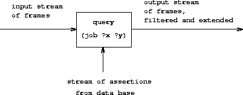
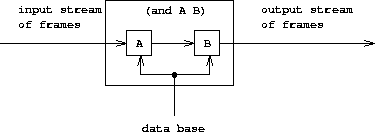

4.4 Logic Programming
In chapter 1 we stressed that computer science deals with imperative (how to) knowledge, whereas mathematics deals with declarative (what is) knowledge. Indeed, programming languages require that the programmer express knowledge in a form that indicates the step-by-step methods for solving particular problems. On the other hand, high-level languages provide, as part of the language implementation, a substantial amount of methodological knowledge that frees the user from concern with numerous details of how a specified computation will progress.
Most programming languages, including Lisp, are organized around computing the values of mathematical functions. Expression-oriented languages (such as Lisp, Fortran, and Algol) capitalize on the 'pun' that an expression that describes the value of a function may also be interpreted as a means of computing that value. Because of this, most programming languages are strongly biased toward unidirectional computations (computations with well-defined inputs and outputs). There are, however, radically different programming languages that relax this bias. We saw one such example in section 3.3.5, where the objects of computation were arithmetic constraints. In a constraint system the direction and the order of computation are not so well specified; in carrying out a computation the system must therefore provide more detailed 'how to' knowledge than would be the case with an ordinary arithmetic computation. This does not mean, however, that the user is released altogether from the responsibility of providing imperative knowledge. There are many constraint networks that implement the same set of constraints, and the user must choose from the set of mathematically equivalent networks a suitable network to specify a particular computation.
The nondeterministic program evaluator of section 4.3 also moves away from the view that programming is about constructing algorithms for computing unidirectional functions. In a nondeterministic language, expressions can have more than one value, and, as a result, the computation is dealing with relations rather than with single-valued functions. Logic programming extends this idea by combining a relational vision of programming with a powerful kind of symbolic pattern matching called unification.^[58]{.small}^
This approach, when it works, can be a
very powerful way to write programs. Part of the power comes from the
fact that a single 'what is' fact can be used to solve a number of
different problems that would have different 'how to' components.
As an example, consider the append operation, which
takes two lists as arguments and combines their elements to form a
single list. In a procedural language such as Lisp, we could define
append in terms of the basic list constructor cons, as we did in
section 2.2.1:
(define (append x y)
(if (null? x)
y
(cons (car x) (append (cdr x) y))))
This procedure can be regarded as a translation into Lisp of the
following two rules, the first of which covers the case where the first
list is empty and the second of which handles the case of a nonempty
list, which is a cons of two parts:
- For any list
y, the empty list andyappendto formy. - For any
u,v,y, andz,(cons u v)andyappendto form(cons u z)ifvandyappendto formz.^[59]{.small}^
Using the append procedure, we can answer questions such as
Find the
appendof(a b)and(c d).
But the same two rules are also sufficient for answering the following sorts of questions, which the procedure can't answer:
Find a list
ythatappends with(a b)to produce(a b c d).Find all
xandythatappendto form(a b c d).
In a logic programming language, the
programmer writes an append 'procedure' by stating the two rules
about append given above. 'How to' knowledge is provided
automatically by the interpreter to allow this single pair of rules to
be used to answer all three types of questions about
append.^[60]{.small}^
Contemporary logic programming languages (including the one we implement here) have substantial deficiencies, in that their general 'how to' methods can lead them into spurious infinite loops or other undesirable behavior. Logic programming is an active field of research in computer science.^[61]{.small}^
Earlier in this chapter we explored the technology of implementing interpreters and described the elements that are essential to an interpreter for a Lisp-like language (indeed, to an interpreter for any conventional language). Now we will apply these ideas to discuss an interpreter for a logic programming language. We call this language the query language, because it is very useful for retrieving information from data bases by formulating queries, or questions, expressed in the language. Even though the query language is very different from Lisp, we will find it convenient to describe the language in terms of the same general framework we have been using all along: as a collection of primitive elements, together with means of combination that enable us to combine simple elements to create more complex elements and means of abstraction that enable us to regard complex elements as single conceptual units. An interpreter for a logic programming language is considerably more complex than an interpreter for a language like Lisp. Nevertheless, we will see that our query-language interpreter contains many of the same elements found in the interpreter of section 4.1. In particular, there will be an 'eval' part that classifies expressions according to type and an 'apply' part that implements the language's abstraction mechanism (procedures in the case of Lisp, and rules in the case of logic programming). Also, a central role is played in the implementation by a frame data structure, which determines the correspondence between symbols and their associated values. One additional interesting aspect of our query-language implementation is that we make substantial use of streams, which were introduced in chapter 3.
4.4.1 Deductive Information Retrieval
Logic programming excels in providing interfaces to data bases for information retrieval. The query language we shall implement in this chapter is designed to be used in this way.
In order to illustrate what the query system does, we will show how it can be used to manage the data base of personnel records for Microshaft, a thriving high-technology company in the Boston area. The language provides pattern-directed access to personnel information and can also take advantage of general rules in order to make logical deductions.
A sample data base
The personnel data base for Microshaft contains assertions about company personnel. Here is the information about Ben Bitdiddle, the resident computer wizard:
(address (Bitdiddle Ben) (Slumerville (Ridge Road) 10))
(job (Bitdiddle Ben) (computer wizard))
(salary (Bitdiddle Ben) 60000)
Each assertion is a list (in this case a triple) whose elements can themselves be lists.
As resident wizard, Ben is in charge of the company's computer division, and he supervises two programmers and one technician. Here is the information about them:
(address (Hacker Alyssa P) (Cambridge (Mass Ave) 78))
(job (Hacker Alyssa P) (computer programmer))
(salary (Hacker Alyssa P) 40000)
(supervisor (Hacker Alyssa P) (Bitdiddle Ben))
(address (Fect Cy D) (Cambridge (Ames Street) 3))
(job (Fect Cy D) (computer programmer))
(salary (Fect Cy D) 35000)
(supervisor (Fect Cy D) (Bitdiddle Ben))
(address (Tweakit Lem E) (Boston (Bay State Road) 22))
(job (Tweakit Lem E) (computer technician))
(salary (Tweakit Lem E) 25000)
(supervisor (Tweakit Lem E) (Bitdiddle Ben))
There is also a programmer trainee, who is supervised by Alyssa:
(address (Reasoner Louis) (Slumerville (Pine Tree Road) 80))
(job (Reasoner Louis) (computer programmer trainee))
(salary (Reasoner Louis) 30000)
(supervisor (Reasoner Louis) (Hacker Alyssa P))
All of these people are in the computer division, as indicated by the
word computer as the first item in their job descriptions.
Ben is a high-level employee. His supervisor is the company's big wheel himself:
(supervisor (Bitdiddle Ben) (Warbucks Oliver))
(address (Warbucks Oliver) (Swellesley (Top Heap Road)))
(job (Warbucks Oliver) (administration big wheel))
(salary (Warbucks Oliver) 150000)
Besides the computer division supervised by Ben, the company has an accounting division, consisting of a chief accountant and his assistant:
(address (Scrooge Eben) (Weston (Shady Lane) 10))
(job (Scrooge Eben) (accounting chief accountant))
(salary (Scrooge Eben) 75000)
(supervisor (Scrooge Eben) (Warbucks Oliver))
(address (Cratchet Robert) (Allston (N Harvard Street) 16))
(job (Cratchet Robert) (accounting scrivener))
(salary (Cratchet Robert) 18000)
(supervisor (Cratchet Robert) (Scrooge Eben))
There is also a secretary for the big wheel:
(address (Aull DeWitt) (Slumerville (Onion Square) 5))
(job (Aull DeWitt) (administration secretary))
(salary (Aull DeWitt) 25000)
(supervisor (Aull DeWitt) (Warbucks Oliver))
The data base also contains assertions about which kinds of jobs can be done by people holding other kinds of jobs. For instance, a computer wizard can do the jobs of both a computer programmer and a computer technician:
(can-do-job (computer wizard) (computer programmer))
(can-do-job (computer wizard) (computer technician))
A computer programmer could fill in for a trainee:
(can-do-job (computer programmer)
(computer programmer trainee))
Also, as is well known,
(can-do-job (administration secretary)
(administration big wheel))
Simple queries
The query language allows users to retrieve information from the data base by posing queries in response to the system's prompt. For example, to find all computer programmers one can say
;;; Query input:
(job ?x (computer programmer))
The system will respond with the following items:
;;; Query results:
(job (Hacker Alyssa P) (computer programmer))
(job (Fect Cy D) (computer programmer))
The input query specifies that we are looking for entries
in the data base that match a certain pattern. In this example, the
pattern specifies entries consisting of three items, of which the first
is the literal symbol job, the second can be anything, and the third
is the literal list (computer programmer). The 'anything' that
can be the second item in the matching list is specified by a
pattern variable, ?x. The general form of a pattern
variable is a symbol, taken to be the name of the variable, preceded by
a question mark. We will see below why it is useful to specify names for
pattern variables rather than just putting ? into patterns to
represent 'anything.' The system responds to a simple query by
showing all entries in the data base that match the specified pattern.
A pattern can have more than one variable. For example, the query
(address ?x ?y)
will list all the employees' addresses.
A pattern can have no variables, in which case the query simply determines whether that pattern is an entry in the data base. If so, there will be one match; if not, there will be no matches.
The same pattern variable can appear more than once in a query, specifying that the same 'anything' must appear in each position. This is why variables have names. For example,
(supervisor ?x ?x)
finds all people who supervise themselves (though there are no such assertions in our sample data base).
The query
(job ?x (computer ?type))
matches all job entries whose third item is a two-element list whose
first item is computer:
(job (Bitdiddle Ben) (computer wizard))
(job (Hacker Alyssa P) (computer programmer))
(job (Fect Cy D) (computer programmer))
(job (Tweakit Lem E) (computer technician))
This same pattern does not match
(job (Reasoner Louis) (computer programmer trainee))
because the third item in the entry is a list of three elements, and the
pattern's third item specifies that there should be two elements. If we
wanted to change the pattern so that the third item could be any list
beginning with computer, we could
specify^[62]{.small}^
(job ?x (computer . ?type))
For example,
(computer . ?type)
matches the data
(computer programmer trainee)
with ?type as the list (programmer trainee). It also matches the
data
(computer programmer)
with ?type as the list (programmer), and matches the data
(computer)
with ?type as the empty list ().
We can describe the query language's processing of simple queries as follows:
- The system finds all assignments to variables in the query pattern that satisfy the pattern -- that is, all sets of values for the variables such that if the pattern variables are instantiated with (replaced by) the values, the result is in the data base.
- The system responds to the query by listing all instantiations of the query pattern with the variable assignments that satisfy it.
Note that if the pattern has no variables, the query reduces to a determination of whether that pattern is in the data base. If so, the empty assignment, which assigns no values to variables, satisfies that pattern for that data base.
Exercise 4.55. Give simple queries that retrieve the following information from the data base:
a. all people supervised by Ben Bitdiddle;
b. the names and jobs of all people in the accounting division;
c. the names and addresses of all people who live in Slumerville.
Compound queries
Simple queries form the primitive operations of the
query language. In order to form compound operations, the query language
provides means of combination. One thing that makes the query language a
logic programming language is that the means of combination mirror the
means of combination used in forming logical expressions: and, or,
and not. (Here and, or, and not are not the Lisp primitives, but
rather operations built into the query language.)
We can use and as follows to find the addresses of all
the computer programmers:
(and (job ?person (computer programmer))
(address ?person ?where))
The resulting output is
(and (job (Hacker Alyssa P) (computer programmer))
(address (Hacker Alyssa P) (Cambridge (Mass Ave) 78)))
(and (job (Fect Cy D) (computer programmer))
(address (Fect Cy D) (Cambridge (Ames Street) 3)))
In general,
(and <query1> <query2> ... <query~n~>)
is satisfied by all sets of values for the pattern variables that
simultaneously satisfy <query~1~> ... <query~n~>.
As for simple queries, the system processes a compound query by finding all assignments to the pattern variables that satisfy the query, then displaying instantiations of the query with those values.
Another means of constructing compound queries is through
or. For example,
(or (supervisor ?x (Bitdiddle Ben))
(supervisor ?x (Hacker Alyssa P)))
will find all employees supervised by Ben Bitdiddle or Alyssa P. Hacker:
(or (supervisor (Hacker Alyssa P) (Bitdiddle Ben))
(supervisor (Hacker Alyssa P) (Hacker Alyssa P)))
(or (supervisor (Fect Cy D) (Bitdiddle Ben))
(supervisor (Fect Cy D) (Hacker Alyssa P)))
(or (supervisor (Tweakit Lem E) (Bitdiddle Ben))
(supervisor (Tweakit Lem E) (Hacker Alyssa P)))
(or (supervisor (Reasoner Louis) (Bitdiddle Ben))
(supervisor (Reasoner Louis) (Hacker Alyssa P)))
In general,
(or <query1> <query2> ... <query~n~>)
is satisfied by all sets of values for the pattern variables that
satisfy at least one of <query~1~> ... <query~n~>.
Compound queries can also be formed with not. For
example,
(and (supervisor ?x (Bitdiddle Ben))
(not (job ?x (computer programmer))))
finds all people supervised by Ben Bitdiddle who are not computer programmers. In general,
(not <query1>)
is satisfied by all assignments to the pattern variables that do not satisfy <query~1~>.^[63]{.small}^
The final combining form is called lisp-value. When
lisp-value is the first element of a pattern, it specifies that the
next element is a Lisp predicate to be applied to the rest of the
(instantiated) elements as arguments. In general,
(lisp-value <predicate> <arg1> ... <arg~n~>)
will be satisfied by assignments to the pattern variables for which the
<predicate> applied to the instantiated <arg~1~> ...
<arg~n~> is true. For example, to find all people whose salary is
greater than $30,000 we could
write^[64]{.small}^
(and (salary ?person ?amount)
(lisp-value > ?amount 30000))
Exercise 4.56. Formulate compound queries that retrieve the following information:
a. the names of all people who are supervised by Ben Bitdiddle, together with their addresses;
b. all people whose salary is less than Ben Bitdiddle's, together with their salary and Ben Bitdiddle's salary;
c. all people who are supervised by someone who is not in the computer division, together with the supervisor's name and job.
Rules
In addition to primitive queries and compound queries, the query language provides means for abstracting queries. These are given by rules. The rule
(rule (lives-near ?person-1 ?person-2)
(and (address ?person-1 (?town . ?rest-1))
(address ?person-2 (?town . ?rest-2))
(not (same ?person-1 ?person-2))))
specifies that two people live near each other if they live in the same
town. The final not clause prevents the rule from saying that all
people live near themselves. The same relation is defined by a very
simple
rule:^[65]{.small}^
(rule (same ?x ?x))
The following rule declares that a person is a 'wheel' in an organization if he supervises someone who is in turn a supervisor:
(rule (wheel ?person)
(and (supervisor ?middle-manager ?person)
(supervisor ?x ?middle-manager)))
The general form of a rule is
(rule <conclusion> <body>)
where <conclusion> is a pattern and <body> is any query.^[66]{.small}^ We can think of a rule as representing a large (even infinite) set of assertions, namely all instantiations of the rule conclusion with variable assignments that satisfy the rule body. When we described simple queries (patterns), we said that an assignment to variables satisfies a pattern if the instantiated pattern is in the data base. But the pattern needn't be explicitly in the data base as an assertion. It can be an implicit assertion implied by a rule. For example, the query
(lives-near ?x (Bitdiddle Ben))
results in
(lives-near (Reasoner Louis) (Bitdiddle Ben))
(lives-near (Aull DeWitt) (Bitdiddle Ben))
To find all computer programmers who live near Ben Bitdiddle, we can ask
(and (job ?x (computer programmer))
(lives-near ?x (Bitdiddle Ben)))
As in the case of compound procedures, rules can be used
as parts of other rules (as we saw with the lives-near rule above) or
even be defined recursively. For instance, the rule
(rule (outranked-by ?staff-person ?boss)
(or (supervisor ?staff-person ?boss)
(and (supervisor ?staff-person ?middle-manager)
(outranked-by ?middle-manager ?boss))))
says that a staff person is outranked by a boss in the organization if the boss is the person's supervisor or (recursively) if the person's supervisor is outranked by the boss.
Exercise 4.57. Define a rule that says that person 1 can replace person 2 if either person 1 does the same job as person 2 or someone who does person 1's job can also do person 2's job, and if person 1 and person 2 are not the same person. Using your rule, give queries that find the following:
a. all people who can replace Cy D. Fect;
b. all people who can replace someone who is being paid more than they are, together with the two salaries.
Exercise 4.58. Define a rule that says that a person is a 'big shot' in a division if the person works in the division but does not have a supervisor who works in the division.
Exercise 4.59. Ben Bitdiddle has missed one meeting too many. Fearing that his habit of forgetting meetings could cost him his job, Ben decides to do something about it. He adds all the weekly meetings of the firm to the Microshaft data base by asserting the following:
(meeting accounting (Monday 9am))
(meeting administration (Monday 10am))
(meeting computer (Wednesday 3pm))
(meeting administration (Friday 1pm))
Each of the above assertions is for a meeting of an entire division. Ben also adds an entry for the company-wide meeting that spans all the divisions. All of the company's employees attend this meeting.
(meeting whole-company (Wednesday 4pm))
a. On Friday morning, Ben wants to query the data base for all the meetings that occur that day. What query should he use?
b. Alyssa P. Hacker is unimpressed. She thinks it would be much more
useful to be able to ask for her meetings by specifying her name. So she
designs a rule that says that a person's meetings include all
whole-company meetings plus all meetings of that person's division.
Fill in the body of Alyssa's rule.
(rule (meeting-time ?person ?day-and-time)
<rule-body>)
c. Alyssa arrives at work on Wednesday morning and wonders what meetings she has to attend that day. Having defined the above rule, what query should she make to find this out?
Exercise 4.60. By giving the query
(lives-near ?person (Hacker Alyssa P))
Alyssa P. Hacker is able to find people who live near her, with whom she can ride to work. On the other hand, when she tries to find all pairs of people who live near each other by querying
(lives-near ?person-1 ?person-2)
she notices that each pair of people who live near each other is listed twice; for example,
(lives-near (Hacker Alyssa P) (Fect Cy D))
(lives-near (Fect Cy D) (Hacker Alyssa P))
Why does this happen? Is there a way to find a list of people who live near each other, in which each pair appears only once? Explain.
Logic as programs
We can regard a rule as a kind of logical implication:
If an assignment of values to pattern variables satisfies the body,
then it satisfies the conclusion. Consequently, we can regard the
query language as having the ability to perform logical deductions
based upon the rules. As an example, consider the append operation
described at the beginning of section 4.4.
As we said, append can be characterized by the following two rules:
- For any list
y, the empty list andyappendto formy. - For any
u,v,y, andz,(cons u v)andyappendto form(cons u z)ifvandyappendto formz.
To express this in our query language, we define two rules for a relation
(append-to-form x y z)
which we can interpret to mean 'x and y append to form z':
(rule (append-to-form () ?y ?y))
(rule (append-to-form (?u . ?v) ?y (?u . ?z))
(append-to-form ?v ?y ?z))
The first rule has no body, which means that the
conclusion holds for any value of ?y. Note how the second rule makes
use of dotted-tail notation to name the car and cdr
of a list.
Given these two rules, we can formulate queries that compute the
append of two lists:
;;; Query input:
(append-to-form (a b) (c d) ?z)
;;; Query results:
(append-to-form (a b) (c d) (a b c d))
What is more striking, we can use the same rules to ask the question
'Which list, when appended to (a b), yields (a b c d)?' This
is done as follows:
;;; Query input:
(append-to-form (a b) ?y (a b c d))
;;; Query results:
(append-to-form (a b) (c d) (a b c d))
We can also ask for all pairs of lists that append to form
(a b c d):
;;; Query input:
(append-to-form ?x ?y (a b c d))
;;; Query results:
(append-to-form () (a b c d) (a b c d))
(append-to-form (a) (b c d) (a b c d))
(append-to-form (a b) (c d) (a b c d))
(append-to-form (a b c) (d) (a b c d))
(append-to-form (a b c d) () (a b c d))
The query system may seem to exhibit quite a bit of intelligence in
using the rules to deduce the answers to the queries above. Actually, as
we will see in the next section, the system is following a
well-determined algorithm in unraveling the rules. Unfortunately,
although the system works impressively in the append case, the general
methods may break down in more complex cases, as we will see in
section 4.4.3.
Exercise 4.61. The following rules implement a
next-to relation that finds adjacent elements of a list:
(rule (?x next-to ?y in (?x ?y . ?u)))
(rule (?x next-to ?y in (?v . ?z))
(?x next-to ?y in ?z))
What will the response be to the following queries?
(?x next-to ?y in (1 (2 3) 4))
(?x next-to 1 in (2 1 3 1))
Exercise 4.62. Define rules to
implement the last-pair operation of
exercise 2.17, which returns a list
containing the last element of a nonempty list. Check your rules on
queries such as (last-pair (3) ?x), (last-pair (1 2 3) ?x), and
(last-pair (2 ?x) (3)). Do your rules work correctly on queries such
as (last-pair ?x (3)) ?
Exercise 4.63. The following data base (see Genesis 4) traces the genealogy of the descendants of Ada back to Adam, by way of Cain:
(son Adam Cain)
(son Cain Enoch)
(son Enoch Irad)
(son Irad Mehujael)
(son Mehujael Methushael)
(son Methushael Lamech)
(wife Lamech Ada)
(son Ada Jabal)
(son Ada Jubal)
Formulate rules such as 'If S is the son of F, and F is the son of G, then S is the grandson of G' and 'If W is the wife of M, and S is the son of W, then S is the son of M' (which was supposedly more true in biblical times than today) that will enable the query system to find the grandson of Cain; the sons of Lamech; the grandsons of Methushael. (See exercise 4.69 for some rules to deduce more complicated relationships.)
4.4.2 How the Query System Works
In section 4.4.4 we will present a complete implementation of the query interpreter as a collection of procedures. In this section we give an overview that explains the general structure of the system independent of low-level implementation details. After describing the implementation of the interpreter, we will be in a position to understand some of its limitations and some of the subtle ways in which the query language's logical operations differ from the operations of mathematical logic.
It should be apparent that the query evaluator must perform some kind of
search in order to match queries against facts and rules in the data
base. One way to do this would be to implement the query system as a
nondeterministic program, using the amb evaluator of
section 4.3 (see
exercise 4.78). Another possibility is to
manage the search with the aid of streams. Our implementation follows
this second approach.
The query system is organized around two central operations called
pattern matching and unification. We first describe pattern matching
and explain how this operation, together with the organization of
information in terms of streams of frames, enables us to implement both
simple and compound queries. We next discuss unification, a
generalization of pattern matching needed to implement rules. Finally,
we show how the entire query interpreter fits together through a
procedure that classifies expressions in a manner analogous to the way
eval classifies expressions for the interpreter described in
section 4.1.
Pattern matching
A pattern matcher is a program that
tests whether some datum fits a specified pattern. For example, the data
list ((a b) c (a b)) matches the pattern (?x c ?x) with the pattern
variable ?x bound to (a b). The same data list matches the pattern
(?x ?y ?z) with ?x and ?z both bound to (a b) and ?y bound to
c. It also matches the pattern ((?x ?y) c (?x ?y)) with ?x bound
to a and ?y bound to b. However, it does not match the pattern
(?x a ?y), since that pattern specifies a list whose second element is
the symbol a.
The pattern matcher used by the query system takes as inputs a pattern, a datum, and a frame that specifies bindings for various pattern variables. It checks whether the datum matches the pattern in a way that is consistent with the bindings already in the frame. If so, it returns the given frame augmented by any bindings that may have been determined by the match. Otherwise, it indicates that the match has failed.
For example, using the pattern (?x ?y ?x) to match (a b a) given an
empty frame will return a frame specifying that ?x is bound to a and
?y is bound to b. Trying the match with the same pattern, the same
datum, and a frame specifying that ?y is bound to a will fail.
Trying the match with the same pattern, the same datum, and a frame in
which ?y is bound to b and ?x is unbound will return the given
frame augmented by a binding of ?x to a.
The pattern matcher is all the mechanism that is needed to process simple queries that don't involve rules. For instance, to process the query
(job ?x (computer programmer))
we scan through all assertions in the data base and select those that
match the pattern with respect to an initially empty frame. For each
match we find, we use the frame returned by the match to instantiate the
pattern with a value for ?x.
Streams of frames
The testing of patterns against frames is organized through the use of streams. Given a single frame, the matching process runs through the data-base entries one by one. For each data-base entry, the matcher generates either a special symbol indicating that the match has failed or an extension to the frame. The results for all the data-base entries are collected into a stream, which is passed through a filter to weed out the failures. The result is a stream of all the frames that extend the given frame via a match to some assertion in the data base.^[67]{.small}^
In our system, a query takes an input stream of frames and performs the above matching operation for every frame in the stream, as indicated in figure 4.4. That is, for each frame in the input stream, the query generates a new stream consisting of all extensions to that frame by matches to assertions in the data base. All these streams are then combined to form one huge stream, which contains all possible extensions of every frame in the input stream. This stream is the output of the query.

Figure 4.4: A query processes a stream of frames.
To answer a simple query, we use the query with an input stream consisting of a single empty frame. The resulting output stream contains all extensions to the empty frame (that is, all answers to our query). This stream of frames is then used to generate a stream of copies of the original query pattern with the variables instantiated by the values in each frame, and this is the stream that is finally printed.
Compound queries
The real elegance of the stream-of-frames implementation
is evident when we deal with compound queries. The processing of
compound queries makes use of the ability of our matcher to demand that
a match be consistent with a specified frame. For
example, to handle the and of two queries, such as
(and (can-do-job ?x (computer programmer trainee))
(job ?person ?x))
(informally, 'Find all people who can do the job of a computer programmer trainee'), we first find all entries that match the pattern
(can-do-job ?x (computer programmer trainee))
This produces a stream of frames, each of which contains a binding for
?x. Then for each frame in the stream we find all entries that match
(job ?person ?x)
in a way that is consistent with the given binding for ?x. Each such
match will produce a frame containing bindings for ?x and ?person.
The and of two queries can be viewed as a series combination of the
two component queries, as shown in
figure 4.5. The frames that pass through
the first query filter are filtered and further extended by the second
query.

Figure 4.5: The and combination of two queries is produced by
operating on the stream of frames in series.
Figure 4.6 shows the
analogous method for computing the or of two queries as a parallel
combination of the two component queries. The input stream of frames is
extended separately by each query. The two resulting streams are then
merged to produce the final output stream.

Figure 4.6: The or combination of two queries is produced by
operating on the stream of frames in parallel and merging the results.
Even from this high-level description, it is apparent
that the processing of compound queries can be slow. For example, since
a query may produce more than one output frame for each input frame, and
each query in an and gets its input frames from the previous query, an
and query could, in the worst case, have to perform a number of
matches that is exponential in the number of queries (see
exercise 4.76).^[68]{.small}^
Though systems for handling only simple queries are quite practical,
dealing with complex queries is extremely
difficult.^[69]{.small}^
From the stream-of-frames viewpoint, the not of some
query acts as a filter that removes all frames for which the query can
be satisfied. For instance, given the pattern
(not (job ?x (computer programmer)))
we attempt, for each frame in the input stream, to produce extension
frames that satisfy (job ?x (computer programmer)). We remove from the
input stream all frames for which such extensions exist. The result is a
stream consisting of only those frames in which the binding for ?x
does not satisfy (job ?x (computer programmer)). For example, in
processing the query
(and (supervisor ?x ?y)
(not (job ?x (computer programmer))))
the first clause will generate frames with bindings for ?x and ?y.
The not clause will then filter these by removing all frames in which
the binding for ?x satisfies the restriction that ?x is a computer
programmer.^[70]{.small}^
The lisp-value special form is implemented as a similar
filter on frame streams. We use each frame in the stream to instantiate
any variables in the pattern, then apply the Lisp predicate. We remove
from the input stream all frames for which the predicate fails.
Unification
In order to handle rules in the query language, we must be able to find the rules whose conclusions match a given query pattern. Rule conclusions are like assertions except that they can contain variables, so we will need a generalization of pattern matching -- called unification -- in which both the 'pattern' and the 'datum' may contain variables.
A unifier takes two patterns, each containing constants and variables,
and determines whether it is possible to assign values to the variables
that will make the two patterns equal. If so, it returns a frame
containing these bindings. For example, unifying (?x a ?y) and
(?y ?z a) will specify a frame in which ?x, ?y, and ?z must all
be bound to a. On the other hand, unifying (?x ?y a) and (?x b ?y)
will fail, because there is no value for ?y that can make the two
patterns equal. (For the second elements of the patterns to be equal,
?y would have to be b; however, for the third elements to be equal,
?y would have to be a.) The unifier used in the query system, like
the pattern matcher, takes a frame as input and performs unifications
that are consistent with this frame.
The unification algorithm is the most technically difficult part of the
query system. With complex patterns, performing unification may seem to
require deduction. To unify (?x ?x) and ((a ?y c) (a b ?z)), for
example, the algorithm must infer that ?x should be (a b c), ?y
should be b, and ?z should be c. We may think of this process as
solving a set of equations among the pattern components. In general,
these are simultaneous equations, which may require substantial
manipulation to
solve.^[71]{.small}^
For example, unifying (?x ?x) and ((a ?y c) (a b ?z)) may be thought
of as specifying the simultaneous equations
?x = (a ?y c)
?x = (a b ?z)
These equations imply that
(a ?y c) = (a b ?z)
which in turn implies that
a = a, ?y = b, c = ?z,
and hence that
?x = (a b c)
In a successful pattern match, all pattern variables become bound, and the values to which they are bound contain only constants. This is also true of all the examples of unification we have seen so far. In general, however, a successful unification may not completely determine the variable values; some variables may remain unbound and others may be bound to values that contain variables.
Consider the unification of (?x a) and ((b ?y) ?z). We can deduce
that ?x = (b ?y) and a = ?z, but we cannot further solve for ?x
or ?y. The unification doesn't fail, since it is certainly possible
to make the two patterns equal by assigning values to ?x and ?y.
Since this match in no way restricts the values ?y can take on, no
binding for ?y is put into the result frame. The match does, however,
restrict the value of ?x. Whatever value ?y has, ?x must be
(b ?y). A binding of ?x to the pattern (b ?y) is thus put into the
frame. If a value for ?y is later determined and added to the frame
(by a pattern match or unification that is required to be consistent
with this frame), the previously bound ?x will refer to this
value.^[72]{.small}^
Applying rules
Unification is the key to the component of the query system that makes inferences from rules. To see how this is accomplished, consider processing a query that involves applying a rule, such as
(lives-near ?x (Hacker Alyssa P))
To process this query, we first use the ordinary pattern-match procedure described above to see if there are any assertions in the data base that match this pattern. (There will not be any in this case, since our data base includes no direct assertions about who lives near whom.) The next step is to attempt to unify the query pattern with the conclusion of each rule. We find that the pattern unifies with the conclusion of the rule
(rule (lives-near ?person-1 ?person-2)
(and (address ?person-1 (?town . ?rest-1))
(address ?person-2 (?town . ?rest-2))
(not (same ?person-1 ?person-2))))
resulting in a frame specifying that ?person-2 is bound to
(Hacker Alyssa P) and that ?x should be bound to (have the same
value as) ?person-1. Now, relative to this frame, we evaluate the
compound query given by the body of the rule. Successful matches will
extend this frame by providing a binding for ?person-1, and
consequently a value for ?x, which we can use to instantiate the
original query pattern.
In general, the query evaluator uses the following method to apply a rule when trying to establish a query pattern in a frame that specifies bindings for some of the pattern variables:
- Unify the query with the conclusion of the rule to form, if successful, an extension of the original frame.
- Relative to the extended frame, evaluate the query formed by the body of the rule.
Notice how similar this is to the method for applying a
procedure in the eval/apply evaluator for Lisp:
- Bind the procedure's parameters to its arguments to form a frame that extends the original procedure environment.
- Relative to the extended environment, evaluate the expression formed by the body of the procedure.
The similarity between the two evaluators should come as no surprise. Just as procedure definitions are the means of abstraction in Lisp, rule definitions are the means of abstraction in the query language. In each case, we unwind the abstraction by creating appropriate bindings and evaluating the rule or procedure body relative to these.
Simple queries
We saw earlier in this section how to evaluate simple queries in the absence of rules. Now that we have seen how to apply rules, we can describe how to evaluate simple queries by using both rules and assertions.
Given the query pattern and a stream of frames, we produce, for each frame in the input stream, two streams:
- a stream of extended frames obtained by matching the pattern against all assertions in the data base (using the pattern matcher), and
- a stream of extended frames obtained by applying all possible rules (using the unifier).^[73]{.small}^
Appending these two streams produces a stream that consists of all the ways that the given pattern can be satisfied consistent with the original frame. These streams (one for each frame in the input stream) are now all combined to form one large stream, which therefore consists of all the ways that any of the frames in the original input stream can be extended to produce a match with the given pattern.
The query evaluator and the driver loop
Despite the complexity of the underlying matching
operations, the system is organized much like an evaluator for any
language. The procedure that coordinates the matching operations is
called qeval, and it plays a role
analogous to that of the eval procedure for Lisp. Qeval takes as
inputs a query and a stream of frames. Its output is a stream of frames,
corresponding to successful matches to the query pattern, that extend
some frame in the input stream, as indicated in
figure 4.4. Like eval, qeval
classifies the different types of expressions (queries) and dispatches
to an appropriate procedure for each. There is a procedure for each
special form (and, or, not, and lisp-value) and one for simple
queries.
The driver loop, which is analogous to the
driver-loop procedure for the other evaluators in this chapter, reads
queries from the terminal. For each query, it calls qeval with the
query and a stream that consists of a single empty frame. This will
produce the stream of all possible matches (all possible extensions to
the empty frame). For each frame in the resulting stream, it
instantiates the original query using the values of the variables found
in the frame. This stream of instantiated queries is then
printed.^[74]{.small}^
The driver also checks for the special
command assert!, which signals that the input is not a query but
rather an assertion or rule to be added to the data base. For instance,
(assert! (job (Bitdiddle Ben) (computer wizard)))
(assert! (rule (wheel ?person)
(and (supervisor ?middle-manager ?person)
(supervisor ?x ?middle-manager))))
4.4.3 Is Logic Programming Mathematical Logic?
The means of combination used in the
query language may at first seem identical to the operations and,
or, and not of mathematical logic, and the application of
query-language rules is in fact accomplished through a legitimate method
of
inference.^[75]{.small}^
This identification of the query language with mathematical logic is not
really valid, though, because the query language provides a
control structure that interprets the logical
statements procedurally. We can often take advantage of this control
structure. For example, to find all of the supervisors of programmers we
could formulate a query in either of two logically equivalent forms:
(and (job ?x (computer programmer))
(supervisor ?x ?y))
or
(and (supervisor ?x ?y)
(job ?x (computer programmer)))
If a company has many more supervisors than programmers
(the usual case), it is better to use the first form rather than the
second because the data base must be scanned for each intermediate
result (frame) produced by the first clause of the and.
The aim of logic programming is to provide the programmer with techniques for decomposing a computational problem into two separate problems: 'what' is to be computed, and 'how' this should be computed. This is accomplished by selecting a subset of the statements of mathematical logic that is powerful enough to be able to describe anything one might want to compute, yet weak enough to have a controllable procedural interpretation. The intention here is that, on the one hand, a program specified in a logic programming language should be an effective program that can be carried out by a computer. Control ('how' to compute) is effected by using the order of evaluation of the language. We should be able to arrange the order of clauses and the order of subgoals within each clause so that the computation is done in an order deemed to be effective and efficient. At the same time, we should be able to view the result of the computation ('what' to compute) as a simple consequence of the laws of logic.
Our query language can be regarded as just such a procedurally interpretable subset of mathematical logic. An assertion represents a simple fact (an atomic proposition). A rule represents the implication that the rule conclusion holds for those cases where the rule body holds. A rule has a natural procedural interpretation: To establish the conclusion of the rule, establish the body of the rule. Rules, therefore, specify computations. However, because rules can also be regarded as statements of mathematical logic, we can justify any 'inference' accomplished by a logic program by asserting that the same result could be obtained by working entirely within mathematical logic.^[76]{.small}^
Infinite loops
A consequence of the procedural interpretation of logic programs is that it is possible to construct hopelessly inefficient programs for solving certain problems. An extreme case of inefficiency occurs when the system falls into infinite loops in making deductions. As a simple example, suppose we are setting up a data base of famous marriages, including
(assert! (married Minnie Mickey))
If we now ask
(married Mickey ?who)
we will get no response, because the system doesn't know that if A is married to B, then B is married to A. So we assert the rule
(assert! (rule (married ?x ?y)
(married ?y ?x)))
and again query
(married Mickey ?who)
Unfortunately, this will drive the system into an infinite loop, as follows:
- The system finds that the
marriedrule is applicable; that is, the rule conclusion(married ?x ?y)successfully unifies with the query pattern(married Mickey ?who)to produce a frame in which?xis bound toMickeyand?yis bound to?who. So the interpreter proceeds to evaluate the rule body(married ?y ?x)in this frame -- in effect, to process the query(married ?who Mickey). - One answer appears directly as an assertion in the data base:
(married Minnie Mickey). - The
marriedrule is also applicable, so the interpreter again evaluates the rule body, which this time is equivalent to(married Mickey ?who).
The system is now in an infinite loop. Indeed, whether the system will
find the simple answer (married Minnie Mickey) before it goes into the
loop depends on implementation details concerning the order in which the
system checks the items in the data base. This is a very simple example
of the kinds of loops that can occur. Collections of interrelated rules
can lead to loops that are much harder to anticipate, and the appearance
of a loop can depend on the order of clauses in an and (see
exercise 4.64) or on low-level details
concerning the order in which the system processes
queries.^[77]{.small}^
Problems with not
Another quirk in the query system
concerns not. Given the data base of
section 4.4.1, consider the following
two queries:
(and (supervisor ?x ?y)
(not (job ?x (computer programmer))))
(and (not (job ?x (computer programmer)))
(supervisor ?x ?y))
These two queries do not produce the same result. The first query begins
by finding all entries in the data base that match (supervisor ?x ?y),
and then filters the resulting frames by removing the ones in which the
value of ?x satisfies (job ?x (computer programmer)). The second
query begins by filtering the incoming frames to remove those that can
satisfy (job ?x (computer programmer)). Since the only incoming frame
is empty, it checks the data base to see if there are any patterns that
satisfy (job ?x (computer programmer)). Since there generally are
entries of this form, the not clause filters out the empty frame and
returns an empty stream of frames. Consequently, the entire compound
query returns an empty stream.
The trouble is that our implementation of not really is meant to serve
as a filter on values for the variables. If a not clause is processed
with a frame in which some of the variables remain unbound (as does ?x
in the example above), the system will produce unexpected results.
Similar problems occur with the use of lisp-value --
the Lisp predicate can't work if some of its arguments are unbound. See
exercise 4.77.
There is also a much more serious way in which the not of the query
language differs from the not of mathematical logic. In logic, we
interpret the statement 'not P' to mean that P is not true. In
the query system, however, 'not P' means that P is not
deducible from the knowledge in the data base. For example, given the
personnel data base of section 4.4.1,
the system would happily deduce all sorts of not statements, such as
that Ben Bitdiddle is not a baseball fan, that it is not raining
outside, and that 2 + 2 is not
4.^[78]{.small}^
In other words, the not of logic programming languages reflects the
so-called closed world assumption that all relevant
information has been included in the data
base.^[79]{.small}^
Exercise 4.64. Louis Reasoner
mistakenly deletes the outranked-by rule
(section 4.4.1) from the data base. When
he realizes this, he quickly reinstalls it. Unfortunately, he makes a
slight change in the rule, and types it in as
(rule (outranked-by ?staff-person ?boss)
(or (supervisor ?staff-person ?boss)
(and (outranked-by ?middle-manager ?boss)
(supervisor ?staff-person ?middle-manager))))
Just after Louis types this information into the system, DeWitt Aull comes by to find out who outranks Ben Bitdiddle. He issues the query
(outranked-by (Bitdiddle Ben) ?who)
After answering, the system goes into an infinite loop. Explain why.
Exercise 4.65. Cy D. Fect, looking
forward to the day when he will rise in the organization, gives a query
to find all the wheels (using the wheel rule of
section 4.4.1):
(wheel ?who)
To his surprise, the system responds
;;; Query results:
(wheel (Warbucks Oliver))
(wheel (Bitdiddle Ben))
(wheel (Warbucks Oliver))
(wheel (Warbucks Oliver))
(wheel (Warbucks Oliver))
Why is Oliver Warbucks listed four times?
Exercise 4.66. Ben has been generalizing the query system to provide statistics about the company. For example, to find the total salaries of all the computer programmers one will be able to say
(sum ?amount
(and (job ?x (computer programmer))
(salary ?x ?amount)))
In general, Ben's new system allows expressions of the form
(accumulation-function <variable>
<query pattern>)
where accumulation-function can be things like sum, average, or
maximum. Ben reasons that it should be a cinch to implement this. He
will simply feed the query pattern to qeval. This will produce a
stream of frames. He will then pass this stream through a mapping
function that extracts the value of the designated variable from each
frame in the stream and feed the resulting stream of values to the
accumulation function. Just as Ben completes the implementation and is
about to try it out, Cy walks by, still puzzling over the wheel query
result in exercise 4.65. When Cy shows
Ben the system's response, Ben groans, 'Oh, no, my simple
accumulation scheme won't work!'
What has Ben just realized? Outline a method he can use to salvage the situation.
Exercise 4.67. Devise a way to install a loop detector in the query system so as to avoid the kinds of simple loops illustrated in the text and in exercise 4.64. The general idea is that the system should maintain some sort of history of its current chain of deductions and should not begin processing a query that it is already working on. Describe what kind of information (patterns and frames) is included in this history, and how the check should be made. (After you study the details of the query-system implementation in section 4.4.4, you may want to modify the system to include your loop detector.)
Exercise 4.68. Define rules to
implement the reverse operation of
exercise 2.18, which returns a list
containing the same elements as a given list in reverse order. (Hint:
Use append-to-form.) Can your rules answer both (reverse (1 2 3) ?x)
and (reverse ?x (1 2 3)) ?
Exercise 4.69. Beginning with the data base and the
rules you formulated in exercise 4.63,
devise a rule for adding 'greats' to a grandson relationship. This
should enable the system to deduce that Irad is the great-grandson of
Adam, or that Jabal and Jubal are the
great-great-great-great-great-grandsons of Adam. (Hint: Represent the
fact about Irad, for example, as ((great grandson) Adam Irad). Write
rules that determine if a list ends in the word grandson. Use this to
express a rule that allows one to derive the relationship
((great . ?rel) ?x ?y), where ?rel is a list ending in grandson.)
Check your rules on queries such as ((great grandson) ?g ?ggs) and
(?relationship Adam Irad).
4.4.4 Implementing the Query System
Section 4.4.2 described how the query system works. Now we fill in the details by presenting a complete implementation of the system.
4.4.4.1 The Driver Loop and Instantiation
The driver loop for the query system
repeatedly reads input expressions. If the expression is a rule or
assertion to be added to the data base, then the information is added.
Otherwise the expression is assumed to be a query. The driver passes
this query to the evaluator qeval together with an initial frame
stream consisting of a single empty frame. The result of the evaluation
is a stream of frames generated by satisfying the query with variable
values found in the data base. These frames are used to form a new
stream consisting of copies of the original query in which the variables
are instantiated with values supplied by the stream of frames, and this
final stream is printed at the terminal:
(define input-prompt ";;; Query input:")
(define output-prompt ";;; Query results:")
(define (query-driver-loop)
(prompt-for-input input-prompt)
(let ((q (query-syntax-process (read))))
(cond ((assertion-to-be-added? q)
(add-rule-or-assertion! (add-assertion-body q))
(newline)
(display "Assertion added to data base.")
(query-driver-loop))
(else
(newline)
(display output-prompt)
(display-stream
(stream-map
(lambda (frame)
(instantiate q
frame
(lambda (v f)
(contract-question-mark v))))
(qeval q (singleton-stream '())))))
(query-driver-loop)))))
Here, as in the other evaluators in this chapter, we use
an abstract syntax for the expressions of the query language. The
implementation of the expression syntax, including the predicate
assertion-to-be-added? and the selector add-assertion-body, is given
in section 4.4.4.7.
Add-rule-or-assertion! is defined in
section 4.4.4.5.
Before doing any processing on an input expression, the driver loop
transforms it syntactically into a form that makes the processing more
efficient. This involves changing the
representation of pattern variables. When
the query is instantiated, any variables that remain unbound are
transformed back to the input representation before being printed. These
transformations are performed by the two procedures
query-syntax-process and contract-question-mark (section
4.4.4.7).
To instantiate an expression, we copy it, replacing any
variables in the expression by their values in a given frame. The values
are themselves instantiated, since they could contain variables (for
example, if ?x in exp is bound to ?y as the result of unification
and ?y is in turn bound to 5). The action to take if a variable cannot
be instantiated is given by a procedural argument to instantiate.
(define (instantiate exp frame unbound-var-handler)
(define (copy exp)
(cond ((var? exp)
(let ((binding (binding-in-frame exp frame)))
(if binding
(copy (binding-value binding))
(unbound-var-handler exp frame))))
((pair? exp)
(cons (copy (car exp)) (copy (cdr exp))))
(else exp)))
(copy exp))
The procedures that manipulate bindings are defined in section 4.4.4.8.
4.4.4.2 The Evaluator
The qeval procedure, called by the query-driver-loop,
is the basic evaluator of the query system. It takes as inputs a query
and a stream of frames, and it returns a stream of extended frames. It
identifies special forms by a data-directed dispatch
using get and put, just as we did in implementing generic operations
in chapter 2. Any query that is not identified as a special form is
assumed to be a simple query, to be processed by simple-query.
(define (qeval query frame-stream)
(let ((qproc (get (type query) 'qeval)))
(if qproc
(qproc (contents query) frame-stream)
(simple-query query frame-stream))))
Type and contents, defined in
section 4.4.4.7, implement the
abstract syntax of the special forms.
Simple queries
The simple-query procedure handles simple queries. It
takes as arguments a simple query (a pattern) together with a stream of
frames, and it returns the stream formed by extending each frame by all
data-base matches of the query.
(define (simple-query query-pattern frame-stream)
(stream-flatmap
(lambda (frame)
(stream-append-delayed
(find-assertions query-pattern frame)
(delay (apply-rules query-pattern frame))))
frame-stream))
For each frame in the input stream, we use find-assertions
(section 4.4.4.3) to match the pattern
against all assertions in the data base, producing a stream of extended
frames, and we use apply-rules
(section 4.4.4.4) to apply all
possible rules, producing another stream of extended frames. These two
streams are combined (using stream-append-delayed,
section 4.4.4.6) to make a stream of
all the ways that the given pattern can be satisfied consistent with the
original frame (see exercise 4.71). The
streams for the individual input frames are combined using
stream-flatmap (section 4.4.4.6) to
form one large stream of all the ways that any of the frames in the
original input stream can be extended to produce a match with the given
pattern.
Compound queries
And queries are handled as illustrated
in figure 4.5 by the conjoin procedure.
Conjoin takes as inputs the conjuncts and the frame stream and returns
the stream of extended frames. First, conjoin processes the stream of
frames to find the stream of all possible frame extensions that satisfy
the first query in the conjunction. Then, using this as the new frame
stream, it recursively applies conjoin to the rest of the queries.
(define (conjoin conjuncts frame-stream)
(if (empty-conjunction? conjuncts)
frame-stream
(conjoin (rest-conjuncts conjuncts)
(qeval (first-conjunct conjuncts)
frame-stream))))
The expression
(put 'and 'qeval conjoin)
sets up qeval to dispatch to conjoin when an and form is
encountered.
Or queries are handled similarly, as shown in
figure 4.6. The output streams for the
various disjuncts of the or are computed separately and merged using
the interleave-delayed procedure from
section 4.4.4.6. (See
exercises 4.71
and 4.72.)
(define (disjoin disjuncts frame-stream)
(if (empty-disjunction? disjuncts)
the-empty-stream
(interleave-delayed
(qeval (first-disjunct disjuncts) frame-stream)
(delay (disjoin (rest-disjuncts disjuncts)
frame-stream)))))
(put 'or 'qeval disjoin)
The predicates and selectors for the syntax of conjuncts and disjuncts are given in section 4.4.4.7.
Filters
Not is handled by the method outlined in
section 4.4.2. We attempt to extend each
frame in the input stream to satisfy the query being negated, and we
include a given frame in the output stream only if it cannot be
extended.
(define (negate operands frame-stream)
(stream-flatmap
(lambda (frame)
(if (stream-null? (qeval (negated-query operands)
(singleton-stream frame)))
(singleton-stream frame)
the-empty-stream))
frame-stream))
(put 'not 'qeval negate)
Lisp-value is a filter similar to not. Each frame in
the stream is used to instantiate the variables in the pattern, the
indicated predicate is applied, and the frames for which the predicate
returns false are filtered out of the input stream. An error results if
there are unbound pattern variables.
(define (lisp-value call frame-stream)
(stream-flatmap
(lambda (frame)
(if (execute
(instantiate
call
frame
(lambda (v f)
(error "Unknown pat var -- LISP-VALUE" v))))
(singleton-stream frame)
the-empty-stream))
frame-stream))
(put 'lisp-value 'qeval lisp-value)
Execute, which applies the predicate to the arguments, must eval the
predicate expression to get the procedure to apply. However, it must not
evaluate the arguments, since they are already the actual arguments, not
expressions whose evaluation (in Lisp) will produce the arguments. Note
that execute is implemented using eval and apply
from the underlying Lisp system.
(define (execute exp)
(apply (eval (predicate exp) user-initial-environment)
(args exp)))
The always-true special form provides for a query that is always
satisfied. It ignores its contents (normally empty) and simply passes
through all the frames in the input stream. Always-true is used by the
rule-body selector (section 4.4.4.7)
to provide bodies for rules that were defined without
bodies (that is, rules whose conclusions are always satisfied).
(define (always-true ignore frame-stream) frame-stream)
(put 'always-true 'qeval always-true)
The selectors that define the syntax of not and lisp-value are given
in section 4.4.4.7.
4.4.4.3 Finding Assertions by Pattern Matching
Find-assertions, called by
simple-query (section 4.4.4.2),
takes as input a pattern and a frame. It returns a stream of frames,
each extending the given one by a data-base match of the given pattern.
It uses fetch-assertions
(section 4.4.4.5) to get a stream of
all the assertions in the data base that should be checked for a match
against the pattern and the frame. The reason for fetch-assertions
here is that we can often apply simple tests that will eliminate many of
the entries in the data base from the pool of candidates for a
successful match. The system would still work if we eliminated
fetch-assertions and simply checked a stream of all assertions in the
data base, but the computation would be less efficient because we would
need to make many more calls to the matcher.
(define (find-assertions pattern frame)
(stream-flatmap (lambda (datum)
(check-an-assertion datum pattern frame))
(fetch-assertions pattern frame)))
Check-an-assertion takes as arguments a pattern, a data object
(assertion), and a frame and returns either a one-element stream
containing the extended frame or the-empty-stream if the match fails.
(define (check-an-assertion assertion query-pat query-frame)
(let ((match-result
(pattern-match query-pat assertion query-frame)))
(if (eq? match-result 'failed)
the-empty-stream
(singleton-stream match-result))))
The basic pattern matcher returns either the symbol failed or an
extension of the given frame. The basic idea of the matcher is to check
the pattern against the data, element by element, accumulating bindings
for the pattern variables. If the pattern and the data object are the
same, the match succeeds and we return the frame of bindings accumulated
so far. Otherwise, if the pattern is a variable we extend the current
frame by binding the variable to the data, so long as this is consistent
with the bindings already in the frame. If the pattern and the data are
both pairs, we (recursively) match the car of the pattern against the
car of the data to produce a frame; in this frame we then match the
cdr of the pattern against the cdr of the data. If none of these
cases are applicable, the match fails and we return the symbol failed.
(define (pattern-match pat dat frame)
(cond ((eq? frame 'failed) 'failed)
((equal? pat dat) frame)
((var? pat) (extend-if-consistent pat dat frame))
((and (pair? pat) (pair? dat))
(pattern-match (cdr pat)
(cdr dat)
(pattern-match (car pat)
(car dat)
frame)))
(else 'failed)))
Here is the procedure that extends a frame by adding a new binding, if this is consistent with the bindings already in the frame:
(define (extend-if-consistent var dat frame)
(let ((binding (binding-in-frame var frame)))
(if binding
(pattern-match (binding-value binding) dat frame)
(extend var dat frame))))
If there is no binding for the variable in the frame, we simply add the
binding of the variable to the data. Otherwise we match, in the frame,
the data against the value of the variable in the frame. If the stored
value contains only constants, as it must if it was stored during
pattern matching by extend-if-consistent, then the match simply tests
whether the stored and new values are the same. If so, it returns the
unmodified frame; if not, it returns a failure indication. The stored
value may, however, contain pattern variables if it was stored during
unification (see section 4.4.4.4). The
recursive match of the stored pattern against the new data will add or
check bindings for the variables in this pattern. For example, suppose
we have a frame in which ?x is bound to (f ?y) and ?y is unbound,
and we wish to augment this frame by a binding of ?x to (f b). We
look up ?x and find that it is bound to (f ?y). This leads us to
match (f ?y) against the proposed new value (f b) in the same frame.
Eventually this match extends the frame by adding a binding of ?y to
b. ?X remains bound to (f ?y). We never modify a stored binding
and we never store more than one binding for a given variable.
The procedures used by extend-if-consistent to manipulate bindings are
defined in section 4.4.4.8.
Patterns with dotted tails
If a pattern contains a dot followed by a pattern
variable, the pattern variable matches the rest of the data list (rather
than the next element of the data list), just as one would expect with
the dotted-tail notation described in
exercise 2.20. Although the pattern
matcher we have just implemented doesn't look for dots, it does behave
as we want. This is because the Lisp read primitive, which is used by
query-driver-loop to read the query and represent it as a list
structure, treats dots in a special way.
When read sees a dot, instead of making
the next item be the next element of a list (the car of a cons whose
cdr will be the rest of the list) it makes the next item be the cdr
of the list structure. For example, the list structure produced by
read for the pattern (computer ?type) could be constructed by
evaluating the expression (cons 'computer (cons '?type '())), and that
for (computer . ?type) could be constructed by evaluating the
expression (cons 'computer '?type).
Thus, as pattern-match recursively compares cars and cdrs of a
data list and a pattern that had a dot, it eventually matches the
variable after the dot (which is a cdr of the pattern) against a
sublist of the data list, binding the variable to that list. For
example, matching the pattern (computer . ?type) against
(computer programmer trainee) will match ?type against the list
(programmer trainee).
4.4.4.4 Rules and Unification
Apply-rules is the rule analog of find-assertions
(section 4.4.4.3). It takes as input a
pattern and a frame, and it forms a stream of extension frames by
applying rules from the data base. Stream-flatmap maps apply-a-rule
down the stream of possibly applicable rules (selected by fetch-rules,
section 4.4.4.5) and combines the
resulting streams of frames.
(define (apply-rules pattern frame)
(stream-flatmap (lambda (rule)
(apply-a-rule rule pattern frame))
(fetch-rules pattern frame)))
Apply-a-rule applies rules using the method outlined in section
4.4.2. It first augments its argument
frame by unifying the rule conclusion with the pattern in the given
frame. If this succeeds, it evaluates the rule body in this new frame.
Before any of this happens, however, the program renames all the
variables in the rule with unique new names. The reason for this is to
prevent the variables for different rule applications from becoming
confused with each other. For instance, if two rules both use a variable
named ?x, then each one may add a binding for ?x to the frame when
it is applied. These two ?x's have nothing to do with each other, and
we should not be fooled into thinking that the two bindings must be
consistent. Rather than rename variables, we could devise a more clever
environment structure; however, the renaming approach we have chosen
here is the most straightforward, even if not the most efficient. (See
exercise 4.79.) Here is the
apply-a-rule procedure:
(define (apply-a-rule rule query-pattern query-frame)
(let ((clean-rule (rename-variables-in rule)))
(let ((unify-result
(unify-match query-pattern
(conclusion clean-rule)
query-frame)))
(if (eq? unify-result 'failed)
the-empty-stream
(qeval (rule-body clean-rule)
(singleton-stream unify-result))))))
The selectors rule-body and conclusion that extract parts of a rule
are defined in section 4.4.4.7.
We generate unique variable names by associating a unique identifier
(such as a number) with each rule application and combining this
identifier with the original variable names. For example, if the
rule-application identifier is 7, we might change each ?x in the rule
to ?x-7 and each ?y in the rule to ?y-7. (Make-new-variable and
new-rule-application-id are included with the syntax procedures in
section 4.4.4.7.)
(define (rename-variables-in rule)
(let ((rule-application-id (new-rule-application-id)))
(define (tree-walk exp)
(cond ((var? exp)
(make-new-variable exp rule-application-id))
((pair? exp)
(cons (tree-walk (car exp))
(tree-walk (cdr exp))))
(else exp)))
(tree-walk rule)))
The unification algorithm is implemented
as a procedure that takes as inputs two patterns and a frame and returns
either the extended frame or the symbol failed. The unifier is like
the pattern matcher except that it is symmetrical -- variables are
allowed on both sides of the match. Unify-match is basically the same
as pattern-match, except that there is extra code (marked
'***' below) to handle the case where the object on the right
side of the match is a variable.
(define (unify-match p1 p2 frame)
(cond ((eq? frame 'failed) 'failed)
((equal? p1 p2) frame)
((var? p1) (extend-if-possible p1 p2 frame))
((var? p2) (extend-if-possible p2 p1 frame)) ; ***
((and (pair? p1) (pair? p2))
(unify-match (cdr p1)
(cdr p2)
(unify-match (car p1)
(car p2)
frame)))
(else 'failed)))
In unification, as in one-sided pattern matching, we want to accept a
proposed extension of the frame only if it is consistent with existing
bindings. The procedure extend-if-possible used in unification is the
same as the extend-if-consistent used in pattern matching except for
two special checks, marked '***' in the program below. In the
first case, if the variable we are trying to match is not bound, but the
value we are trying to match it with is itself a (different) variable,
it is necessary to check to see if the value is bound, and if so, to
match its value. If both parties to the match are unbound, we may bind
either to the other.
The second check deals with attempts to bind a variable to a pattern
that includes that variable. Such a situation can occur whenever a
variable is repeated in both patterns. Consider, for example, unifying
the two patterns (?x ?x) and (?y <expression involving ?y>)
in a frame where both ?x and ?y are unbound. First ?x is matched
against ?y, making a binding of ?x to ?y. Next, the same ?x is
matched against the given expression involving ?y. Since ?x is
already bound to ?y, this results in matching ?y against the
expression. If we think of the unifier as finding a set of values for
the pattern variables that make the patterns the same, then these
patterns imply instructions to find a ?y such that ?y is equal to
the expression involving ?y. There is no general method for solving
such equations, so we reject such bindings; these cases are recognized
by the predicate
depends-on?.^[80]{.small}^
On the other hand, we do not want to reject attempts to bind a variable
to itself. For example, consider unifying (?x ?x) and (?y ?y). The
second attempt to bind ?x to ?y matches ?y (the stored value of
?x) against ?y (the new value of ?x). This is taken care of by the
equal? clause of unify-match.
(define (extend-if-possible var val frame)
(let ((binding (binding-in-frame var frame)))
(cond (binding
(unify-match
(binding-value binding) val frame))
((var? val) ; ***
(let ((binding (binding-in-frame val frame)))
(if binding
(unify-match
var (binding-value binding) frame)
(extend var val frame))))
((depends-on? val var frame) ; ***
'failed)
(else (extend var val frame)))))
Depends-on? is a predicate that tests whether an expression proposed
to be the value of a pattern variable depends on the variable. This must
be done relative to the current frame because the expression may contain
occurrences of a variable that already has a value that depends on our
test variable. The structure of depends-on? is a simple recursive tree
walk in which we substitute for the values of variables whenever
necessary.
(define (depends-on? exp var frame)
(define (tree-walk e)
(cond ((var? e)
(if (equal? var e)
true
(let ((b (binding-in-frame e frame)))
(if b
(tree-walk (binding-value b))
false))))
((pair? e)
(or (tree-walk (car e))
(tree-walk (cdr e))))
(else false)))
(tree-walk exp))
4.4.4.5 Maintaining the Data Base
One important problem in
designing logic programming languages is that of arranging things so
that as few irrelevant data-base entries as possible will be examined in
checking a given pattern. In our system, in addition to storing all
assertions in one big stream, we store all assertions whose cars are
constant symbols in separate streams, in a table indexed by the symbol.
To fetch an assertion that may match a pattern, we first check to see if
the car of the pattern is a constant symbol. If so, we return (to be
tested using the matcher) all the stored assertions that have the same
car. If the pattern's car is not a constant symbol, we return all
the stored assertions. Cleverer methods could also take advantage of
information in the frame, or try also to optimize the case where the
car of the pattern is not a constant symbol. We avoid building our
criteria for indexing (using the car, handling only the case of
constant symbols) into the program; instead we call on predicates and
selectors that embody our criteria.
(define THE-ASSERTIONS the-empty-stream)
(define (fetch-assertions pattern frame)
(if (use-index? pattern)
(get-indexed-assertions pattern)
(get-all-assertions)))
(define (get-all-assertions) THE-ASSERTIONS)
(define (get-indexed-assertions pattern)
(get-stream (index-key-of pattern) 'assertion-stream))
Get-stream looks up a stream in the table and returns an empty stream
if nothing is stored there.
(define (get-stream key1 key2)
(let ((s (get key1 key2)))
(if s s the-empty-stream)))
Rules are stored similarly, using the car of the rule conclusion. Rule
conclusions are arbitrary patterns, however, so they differ from
assertions in that they can contain variables. A pattern whose car is
a constant symbol can match rules whose conclusions start with a
variable as well as rules whose conclusions have the same car. Thus,
when fetching rules that might match a pattern whose car is a constant
symbol we fetch all rules whose conclusions start with a variable as
well as those whose conclusions have the same car as the pattern. For
this purpose we store all rules whose conclusions start with a variable
in a separate stream in our table, indexed by the symbol ?.
(define THE-RULES the-empty-stream)
(define (fetch-rules pattern frame)
(if (use-index? pattern)
(get-indexed-rules pattern)
(get-all-rules)))
(define (get-all-rules) THE-RULES)
(define (get-indexed-rules pattern)
(stream-append
(get-stream (index-key-of pattern) 'rule-stream)
(get-stream '? 'rule-stream)))
Add-rule-or-assertion! is used by query-driver-loop to add
assertions and rules to the data base. Each item is stored in the index,
if appropriate, and in a stream of all assertions or rules in the data
base.
(define (add-rule-or-assertion! assertion)
(if (rule? assertion)
(add-rule! assertion)
(add-assertion! assertion)))
(define (add-assertion! assertion)
(store-assertion-in-index assertion)
(let ((old-assertions THE-ASSERTIONS))
(set! THE-ASSERTIONS
(cons-stream assertion old-assertions)))
'ok))
(define (add-rule! rule)
(store-rule-in-index rule)
(let ((old-rules THE-RULES))
(set! THE-RULES (cons-stream rule old-rules)))
'ok))
To actually store an assertion or a rule, we check to see if it can be indexed. If so, we store it in the appropriate stream.
(define (store-assertion-in-index assertion)
(if (indexable? assertion)
(let ((key (index-key-of assertion)))
(let ((current-assertion-stream
(get-stream key 'assertion-stream)))
(put key
'assertion-stream
(cons-stream assertion
current-assertion-stream))))))
(define (store-rule-in-index rule)
(let ((pattern (conclusion rule)))
(if (indexable? pattern)
(let ((key (index-key-of pattern)))
(let ((current-rule-stream
(get-stream key 'rule-stream)))
(put key
'rule-stream
(cons-stream rule
current-rule-stream)))))))
The following procedures define how the data-base index is used. A pattern (an assertion or a rule conclusion) will be stored in the table if it starts with a variable or a constant symbol.
(define (indexable? pat)
(let ((key (index-key-of pat)))
(or (symbol? key) (var? key))))
(define (index-key-of pat)
(let ((key (car pat)))
(if (var? key) '? key)))
(define (use-index? pat)
(let ((key (car pat)))
(symbol? key)))
4.4.4.6 Stream Operations
The query evaluator uses the following stream operations, which are adaptations of the stream procedures in chapter 3.
Singleton-stream makes a stream containing one element:
(define (singleton-stream x)
(cons-stream x the-empty-stream))
Stream-flatmap is a version of flatmap (see
exercise 2.28) that is modified to work
with streams. It takes a procedure proc and a stream s and returns
the stream formed by concatenating the streams that result from applying
proc to each element of s.
(define (stream-flatmap proc s)
(if (stream-null? s)
the-empty-stream
(interleave-delayed
(proc (stream-car s))
(delay (stream-flatmap proc (stream-cdr s))))))
Interleave-delayed is like the interleave procedure of
section 3.5.3, except that the second
stream argument is delayed. This is the appropriate way to combine
streams in the query system, because the second stream may not yet be
needed. If we do not delay the second stream, we might do a lot of
superfluous computation. For example, if the first stream is infinite,
we would never get to the second stream at all.
(define (interleave-delayed s1 delayed-s2)
(if (stream-null? s1)
(force delayed-s2)
(cons-stream
(stream-car s1)
(interleave-delayed (force delayed-s2)
(delay (stream-cdr s1))))))
Stream-append-delayed is like stream-append
(section 3.5.3), but it takes a delayed
second stream, for the same reason as interleave-delayed.
(define (stream-append-delayed s1 delayed-s2)
(if (stream-null? s1)
(force delayed-s2)
(cons-stream
(stream-car s1)
(stream-append-delayed (stream-cdr s1) delayed-s2))))
4.4.4.7 Query Syntax Procedures
The following procedures define the syntax of queries, assertions, and rules. They are used by the evaluator and the driver loop.
Type and contents are used by qeval to get the type and contents of
a query. The type is the car of the query.
(define (type exp) (if (pair? exp) (car exp) 'simple))
(define (contents exp) (if (pair? exp) (cdr exp) exp))
Assertion-to-be-added? and add-assertion-body are used by the driver
loop to identify and extract the body of an assert! expression.
(define (assertion-to-be-added? exp)
(tagged-list? exp 'assert!))
(define (add-assertion-body exp) (cadr exp))
Empty-conjunction?, first-conjunct, and rest-conjuncts are used by
conjoin to manipulate and queries.
(define (empty-conjunction? exps) (null? exps))
(define (first-conjunct exps) (car exps))
(define (rest-conjuncts exps) (cdr exps))
Empty-disjunction?, first-disjunct, and rest-disjuncts are used by
disjoin to manipulate or queries.
(define (empty-disjunction? exps) (null? exps))
(define (first-disjunct exps) (car exps))
(define (rest-disjuncts exps) (cdr exps))
Negated-query is used by negate to get the query to be negated from a
not query.
(define (negated-query exps) (car exps))
Predicate and args are used by execute to get the parts of a
lisp-value query.
(define (predicate exps) (car exps))
(define (args exps) (cdr exps))
Rule?, conclusion, and rule-body are used to manipulate rules.
(define (rule? exp) (tagged-list? exp 'rule))
(define (conclusion rule) (cadr rule))
(define (rule-body rule)
(if (null? (cddr rule))
'(always-true)
(caddr rule)))
The query system uses a special internal
representation for pattern variables in order to distinguish them from
ordinary symbols. When the driver reads a query, it scans the query and
replaces all the symbols that start with ? with internal variables,
which are lists beginning with the symbol ?. For example, ?x is
represented as (? x). The procedure var? tests whether an expression
is such a variable. The procedure variable-name returns the symbol.
(define (var? exp) (tagged-list? exp '?))
(define (variable-name var) (cadr var))
Query-syntax-process transforms a query read from the terminal into
the internal form with variables represented as lists. It also checks
for assert! so that the driver loop can tell whether the input is an
assertion or a query.
(define (query-syntax-process exp)
(if (tagged-list? exp 'assert!)
(cons 'assert! (cons (cadr exp) '())))
(map-over-symbols expand-question-mark exp)))
Map-over-symbols is a tree walk that is like instantiate except that
it operates on symbols rather than variables.
(define (map-over-symbols proc exp)
(cond ((pair? exp)
(cons (map-over-symbols proc (car exp))
(map-over-symbols proc (cdr exp))))
((symbol? exp) (proc exp))
(else exp)))
Expand-question-mark does the actual transformation of each variable.
(define (expand-question-mark symbol)
(let ((chars (symbol->list symbol)))
(if (eq? (car chars) #\?)
(list '? (list->symbol (cdr chars)))
symbol)))
Contract-question-mark is used by the driver loop to transform the
internal representation of a variable back to the ?-prefix form for
printing.
(define (contract-question-mark symbol)
(list->symbol
(cons #\?
(symbol->list (variable-name symbol)))))
Make-new-variable and new-rule-application-id are used by
apply-a-rule (section 4.4.4.4) to
generate new variables for each rule application.
(define (make-new-variable var id)
(list '? (string->symbol
(string-append (symbol->string (variable-name var))
"-"
(number->string id)))))
(define *rule-counter* 0)
(define (new-rule-application-id)
(set! *rule-counter* (+ *rule-counter* 1))
*rule-counter*)
4.4.4.8 Frames and Bindings
A frame is a list of bindings. A binding is a cons of a
variable and a value.
(define (make-binding variable value) (cons variable value))
(define (binding-variable binding) (car binding))
(define (binding-value binding) (cdr binding))
(define (binding-in-frame variable frame)
(assoc variable frame))
(define (extend variable value frame)
(cons (make-binding variable value) frame))
Assoc is the primitive that retrieves the binding of a variable in a
frame. It returns the binding if it finds one, and false otherwise.
(define (assoc variable frame)
(cond ((null? frame) false)
((equal? variable (binding-variable (car frame)))
(car frame))
(else (assoc variable (cdr frame)))))
4.4.5 Exercises
Exercise 4.70. The unify-match procedure is passed a frame in which to look up and store bindings. Thus, unify-match can be called with a frame that already contains bindings. The procedure extend-if-possible must be careful, when extending the frame, to distinguish between the case where a variable is unbound and the case where it is bound to a value that happens to be another variable. The following examples, which use the representation of variables described in section 4.4.4.7, illustrate this difference. Suppose that the query system is working with the two patterns (?x a) and (?y b) and a frame in which ?y is bound to ?x:
(unify-match '(? x a) '(? y b) (list (make-binding '(? y) '(? x))))
First, unify-match is called on the cdrs of the patterns, (a) and (b). This fails. Now suppose the frame is empty:
(unify-match '(? x a) '(? y b) '())
In this case, unify-match is called on the cdrs, and this fails. Finally, suppose the frame has a binding for ?y but not for ?x:
(unify-match '(? x a) '(? y b) (list (make-binding '(? y) 'c)))
This time, the cdr match succeeds, and then the car match is tried. ?X is unbound, so it is bound to ?y's value, c. The resulting frame is ((? x) . c) ((? y) . c). In each case, we have simplified the situation by ignoring the fact that the system creates new variable names for each rule application.
For each of the following examples, give the result of the match and explain it.
a. (unify-match '(? x ?x) '((a ?y c) (a b ?z)) '())
b. (unify-match '(? x ?x) '((a ?y c) (a b ?z))
(list (make-binding '(? y) 'b)))
c. (unify-match '(? x (a ?y)) '(?x (a b)) '())
Exercise 4.71. The simple-query procedure forms a stream of frames by appending the stream of frames from the assertions with the stream of frames from the rules. A different implementation would be to interleave the two streams. Would this be a better design? Would it be a worse design? Present arguments for both sides.
Exercise 4.72. The disjoin procedure is implemented with interleave-delayed. Explain why stream-append-delayed would not be appropriate here.
Exercise 4.73. The conjoin procedure is implemented as a cascade of qevals. This is not the only way to compute the conjunction of a set of queries. Another way is to process the queries in parallel and to combine the resulting streams of frames. Devise a procedure that implements this parallel method. Can you find any reason to prefer the parallel method over the serial one, or vice versa?
Exercise 4.74. The negate procedure in section 4.4.4.2 has a bug. Consider a query such as
(and (job ?x (computer programmer))
(not (supervisor ?x (Bitdiddle Ben))))
This should find all the computer programmers who are not supervised by Ben Bitdiddle. The and will first find all computer programmers and produce a stream of frames, each containing a binding for ?x. Then negate will be called on the pattern (supervisor ?x (Bitdiddle Ben)) and this stream of frames. For each frame in the stream, negate will check to see if the pattern can be satisfied given the binding for ?x in that frame. The bug is that negate will check for this by calling qeval with the pattern and a stream containing only the single frame. This is incorrect, because it will not be possible to satisfy the pattern by using a rule if that rule requires further extending the frame to bind other variables.
To see the problem, suppose we have the rule
(rule (supervisor ?x ?y) (and ...))
and we are checking the not clause with a frame in which ?x is bound to Alyssa Hacker. Negate will try to see if (supervisor (Hacker Alyssa P) (Bitdiddle Ben)) can be satisfied. It will try to do this by unifying (supervisor ?x ?y) with (supervisor (Hacker Alyssa P) (Bitdiddle Ben)), which will bind ?y to Ben Bitdiddle and then try to satisfy the body of the supervisor rule. If the body of the supervisor rule requires binding other variables, negate will not be able to do this, because it is processing the stream of frames with singleton-stream. Thus negate will report that the pattern cannot be satisfied, which is wrong.
Fix this bug in negate. You will have to change qeval so that it can produce a stream of all possible extensions to a given frame, rather than a stream of all extensions to any frame in a given stream of frames. You can do this by having qeval take a single frame as argument rather than a stream of frames. Then stream-flatmap in simple-query will no longer be redundant.
Exercise 4.75. The lisp-value special form is vulnerable to the same bug described in exercise 4.74. Fix this bug.
Exercise 4.76. Suppose we have a data base of students in a small school:
(student (Adams Alyssa P) (address ...) (telephone ...))
(student (Bitdiddle Ben) (address ...) (telephone ...))
...
(class (CS101) (lecturer ...) (time ...))
...
(enrolled (Adams Alyssa P) (CS101))
(enrolled (Bitdiddle Ben) (CS101))
(enrolled (Bitdiddle Ben) (CS205))
...
Now suppose we want to find all the students who are enrolled in two different classes. The following query finds all pairs of a student and two classes and then checks if the classes are different:
(and (enrolled ?student ?class-1)
(enrolled ?student ?class-2)
(lisp-value not (equal? ?class-1 ?class-2)))
This is grossly inefficient, because for each student it will check every pair of classes the student is enrolled in. For example, if Ben Bitdiddle is enrolled in ten classes, this query will check 100 pairs of classes for him.
Write a new special form unique-query that will do this job more efficiently. The following query should generate only one answer for each student:
(unique-query (and (enrolled ?student ?class-1)
(enrolled ?student ?class-2)))
To implement this, you will have to change qeval to take an additional argument, a list of the variables that are required to be unique. Qeval will pass this list to the procedures that handle the special forms. For example, conjoin will have to be changed to check if any of the variables in the list become bound by satisfying the first conjunct. If so, these variables must be removed from the list before the rest of the conjuncts are processed.
Exercise 4.77. The query system has a serious bug in that lisp-value and not may not work correctly if the patterns being tested contain variables that are not bound in the input frame stream. For example, if the frame stream passed to negate has a frame in which ?x is unbound, and the pattern to be checked is (job ?x (computer programmer)), then negate will report that the pattern can be satisfied, because there is an assertion (job (Fect Cy D) (computer programmer)) in the data base. This is incorrect. The not should act as a filter, to remove only those frames in which the given pattern is satisfied. An unbound variable can never cause a pattern to be satisfied. For example, a frame in which ?x is unbound could be extended to bind ?x to (Hacker Alyssa P). But it could also be extended to bind ?x to (Bitdiddle Ben). The not should let the frame pass only if there is no way to extend it that satisfies the pattern. Fix this bug in negate and lisp-value. You will have to change the way that frames are created. Up to now, a frame has been a list of bindings. You will have to add to this a list of all the variables that are mentioned in the query but are not yet bound.
Exercise 4.78. Implement the query language as a nondeterministic program to be run with the amb evaluator of section 4.3. In this approach, the query evaluator will not have to deal with streams of frames. Instead, a query will be transformed into a nondeterministic expression with ambs. Evaluating this expression with the amb evaluator will cause the system to search for a satisfying assignment. For example, the query
(and (job ?x (computer programmer))
(supervisor ?x ?y))
can be restated as follows: Find a ?x and a ?y such that ?x has the job of computer programmer and ?y is the supervisor of ?x. In our nondeterministic language, this can be expressed as
(let ((x (an-element-of <list-of-people>))
(y (an-element-of <list-of-people>)))
(require (is-in-db?(job ,x (computer programmer)))) (require (is-in-db? (supervisor ,x ,y)))
(list x y))
where is-in-db? checks if a pattern is in the data base and <list-of-people> is a list of all the people in the data base. The backquote notation used here is the quasiquote syntax described in section 2.4.1.
Complete this sketch of an implementation of the query language. You must implement is-in-db? to check against both assertions and rules. Is-in-db? for a rule will require a unifier. You will also have to implement the various special forms. Think carefully about how to handle not.
Exercise 4.79. When we apply a rule, we rename the variables of the rule with a unique new name. A less straightforward implementation of rules would not do this renaming. Instead, it would require the unifier to distinguish between variables in the query and variables in the rule. That is, if ?x appeared in both the query and the rule, these would be two different variables. Modify the unification algorithm to keep track of the variables in the two patterns being unified. You will have to augment the frame with information to distinguish the variables of the two patterns.
^[58]{.small}^ Logic programming is a major field of computer science research. The language we implement in this section is a version of Prolog (an acronym for Programming in Logic), which was developed in the 1970s by Alain Colmerauer and his colleagues at the University of Marseille. The logic-programming methodology is based on the work of Robert Kowalski at the University of Edinburgh and on earlier work in automated theorem proving. See Kowalski 1979 for a discussion of the logic-programming approach to computer science. The language we implement in this section is a very simple version of Prolog. There are many introductory texts on Prolog, for example, Clocksin and Mellish 1981. The computer language Planner, developed by Carl Hewitt (1969), was an ancestor of Prolog. Planner was a rather cumbersome language, and a subset of Planner, called Micro-Planner (Sussman, Winograd, and Charniak 1971), was used in implementing the SHRDLU program described in Winograd 1973.
^[59]{.small}^
These rules can be stated more formally as follows: Let append(x,y,z)
be the relation that is true if list z is the result of appending
list y to list x. Then append is defined by
append(nil, y, y)is true for any listy.append((u . v), y, (u . z))is true ifappend(v, y, z)is true.
^[60]{.small}^
This is not quite true. The Lisp append procedure can also be used to
answer questions of the third type, by means of the nondeterministic
evaluator of section 4.3. For example, to
find all pairs (?x, ?y) that append to form (a b c d), we could
evaluate
(let ((x (a-list)) (y (a-list)))
(require (equal? (append x y) '(a b c d)))
(list x y))
where a-list is a procedure that nondeterministically generates lists.
This is, however, a hopelessly inefficient way to solve the problem.
^[61]{.small}^ One reason for the great interest in logic programming is its connection to the goal of developing expert systems. See, for example, Davis 1982. Another reason is the hope that logic programming will provide a handle on the problem of programming parallel computers. See, for example, Shapiro 1989.
^[62]{.small}^ This is the dotted-tail notation introduced in exercise 2.20. We will see in section 4.4.4.3 how the query system handles this.
^[63]{.small}^
This interpretation of not is not the only one, or even the most
reasonable one. Many people feel that a not query should be satisfied
only if the variables in the subquery can be instantiated in some way
that satisfies the subquery, and there is some assignment of values to
the other variables in the main query that satisfies the main query.
The problem of giving a clean definition of not in logic programming
is a delicate one. We will return to this in
section 4.4.3.
^[64]{.small}^
We assume here that we have defined a Lisp procedure > that can be
applied to two arguments.
^[65]{.small}^ This rule is not completely correct, because it does not specify that the two people must be different. We will see how to fix this below.
^[66]{.small}^
In Prolog, the conclusion is written first, separated from the body by
the symbol :- (which is meant to be reminiscent of a backward-facing
implication sign). The and connective is indicated by commas. Thus,
the lives-near rule would be written in Prolog as
lives_near(Person1, Person2) :-
address(Person1, Town, _),
address(Person2, Town, _),
not(Person1 = Person2).
In this expression, Person1, Person2, and Town are variables. The
underscore _ indicates an anonymous variable, i.e., a variable that is
not used elsewhere in the rule. We have chosen to use Lisp syntax for
our query language to make it blend with the rest of the book.
^[67]{.small}^ This stream-of-frames data structure was first described by Eugene Charniak (see Charniak, Riesbeck, and McDermott 1980).
^[68]{.small}^ This worst-case estimate assumes that the number of matches of each query to each frame is a constant that is greater than 1 and is independent of the frame. For example, if each query generates two matches for each input frame, then n queries in series will generate 2^n^ output frames for each input frame.
^[69]{.small}^ One of the key ideas in the evolution of data-base systems has been the development of query-optimization techniques. See Ullman 1988 for an introduction to this area.
^[70]{.small}^
This implementation of not is technically called 'negation as
failure.' A query (not q) is considered to be satisfied if the query
q fails. As we will see in section 4.4.3,
this leads to some strange behavior.
^[71]{.small}^ The unification algorithm we present in this chapter is a version of an algorithm developed by J. A. Robinson (1965). The problem of devising efficient unification algorithms is an active area of research.
^[72]{.small}^ This is an example of how a pattern can be used to represent a set of values that is not yet determined. Such a pattern is often called a partially instantiated data object.
^[73]{.small}^ In a practical data-base system, we would use indexing to avoid scanning the entire list of rules. See section 4.4.4.5.
^[74]{.small}^
In a real logic programming system, the user would be able to ask for
more than one answer to a query. This could be accomplished by having
the driver loop, like the amb driver loop of
section 4.3.3, respond to a try-again
request by looking for more elements in the stream of answers. The
stream of frames is a perfect tool for implementing this feature.
Instead of processing the whole stream of frames at once, the driver
would process only one frame at a time, and the try-again command
would cause the driver to process the next frame in the stream.
^[75]{.small}^ The method of inference is a slight variant of a method called resolution, which was developed by the logician J. A. Robinson (1965).
^[76]{.small}^ This is not to say that the query language is a general-purpose theorem prover. As we will see, the query language is organized in such a way that its inferences are chained in a simple fashion. This makes the language an effective programming system, but it also severely limits the kinds of deductions it can make. A general theorem prover might try to prove a statement by, for example, showing that the negation of the statement leads to a contradiction. Such a proof by contradiction is a very powerful inference method, but it is also very expensive to compute. Any programming language that included such a method as its central element would be hopelessly inefficient.
^[77]{.small}^
Most Prolog implementations provide some mechanism for programmers to
control the search. One common mechanism is called cut. Cut allows
the programmer to prune the search tree, which can be useful for
expressing things like 'if you have found one answer, don't bother
searching for any others.'
^[78]{.small}^
This is not quite true. The system will not deduce that 2 + 2 is not 4,
because lisp-value forms are handled specially. The predicate in a
lisp-value form is a Lisp procedure, so it is evaluated by the
underlying Lisp system. The query system has no information about the
behavior of Lisp procedures, so it cannot make deductions about them.
^[79]{.small}^ This is also called negation as failure. See footnote 70.